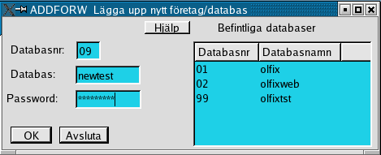

Order/Lager/Fakturering för Linuxsystem
Användarmanual
Kapitel Databaser
Version 0.43
2006-12-13
This program is free software; you can
redistribute it and/or modify
it under the terms of the GNU
General Public License as published by
the Free Software
Foundation; either version 2 of the License, or
(at your option)
any later version.
Copyright 2004 Jan Pihlgren.
Detta kapitel avhandlar möjligheten till att
använda flera företag helt åtskilda frånvarandra.
OLFIX har möjligheten att hantera 99 st olika företag,
numrerade 01 – 99. Varje företag har sin egen
databas.
Detta innebär bland annat skapande av nya databaser.
Det krävs kunskap om och förståelse av databaser,
databasmotorn MySQL samt frågespråket SQL framför
allt i samband med skapande av nya företag/databaser.

Användandet av programmet ADDFORW kräver
ingående kunskaper om databashanteraren MySQL och OLFIX.
OBS!
Behörighet att använda programmet bör begränsas
till en dataadministratör eller en väl insatt och kunnig
användare.
För att kunna skapa en ny databas krävs
behörighet att göra detta.
Programmet ADDFORW används för att skappa en
ny databas. Databasen är tom från början. Bara
tabeller och ett fåtal grunddata finns inlagda.
Databasnumret
anges med två (2) siffror.
Databasnamnet skall anges med
gemener (små bokstäver) och får endast innehålla
15 tecken. Inget av tecknen får vara å ä ö.
Password
avser det lösenord som används för att via mysql göra
förändringar i databaserna.
Programmet kontrollerar att
inte angivet databasnummer eller databasnamn finns registrerat sedan
tidigare.
Programmet ger möjlighet att använda olika databaser/företag. Den kanske viktigaste möjligheten är att det blir enkelt att "hoppa" mella ett skarpt företag/databas och ett testföretag/testdatabas.

Klicka på önskad databas i listan Databasnamn. I och med det så flyttas databasenamnet till fältet Önskad databas. Klicka där efter på knappen Byt.
Programmet kontrollerar om den valda databasen är en olfixdatabas.
Bokföringsår: Tvåställig bokstavskombination som anger vilket bokföringsår som avses.